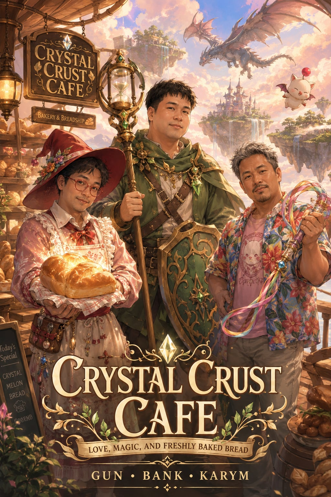

Story Bible & Writer Blueprint - Cozy-Epic Saviors Edition

เรื่องราวนิยายแนว Cozy-Epic Fantasy และ Romance (Throuple/Polyamory) เมื่อพนักงานคาเฟ่สามคน (กัน × แบงค์ × การีม) จากหมู่บ้านทูล ได้รับเลือกจากคริสตัลธาตุโบราณเพื่อกู้โลกด้วยความรักและเสบียงอาหาร สัมผัสความอบอุ่นของการทำขนมอบสดใหม่และสกินชิพชาร์จพลังอันแสนหวานชื่นที่จะช่วยเยียวยาแผ่นดินที่แตกสลาย!
คริสตัลธาตุโบราณทั้งสี่ไม่ได้เลือกอัศวินผู้ก้าวร้าวเพื่อกู้โลก แต่กลับเลือก พนักงานคาเฟ่สามคน แห่งหมู่บ้านทูล เพราะโลกที่บอบช้ำจากสงครามและการแตกดับของธาตุ ต้องการ "การฟื้นฟูและการเยียวยาด้วยรักและเสบียงอาหาร" นี่คือสามประสานที่ลงตัวที่สุด
ร่างอวบ สูง 168 ซม. หนัก 89 กก. สไตล์ Feminine-Cute หมวกปีกขนนก แว่นแดง นิสัยเงียบขรึม มาตรฐานครัวสูงลิ่วและหัวร้อนลึกๆ
Mix ผสมยาสูตรเด็ด และใช้ Spellblade เคลือบดาบเรเปียร์ด้วยโพชั่นเพื่อฉีดรักษาเพื่อนร่วมทางทันที
Alchemical Rapier ดาบเรเปียร์นักปรุงยาปลายดาบเป็นเข็มฉีดยาเวทและเทอร์โมมิเตอร์วัดอุณหภูมิแป้ง
พี่หมีหุ่นใหญ่ สูง 180 ซม. หนัก 92 กก. อายุ 30 ปี หน้าตาดูชายไทยทั่วไปจนเดายากว่าเป็นเกย์ สวมเสื้อยืดมือสอง กางเกงชิโน่ รองเท้า Birkenstock ลงอาคม สีประจำตัวคือสีเขียว
Cover เอาตัวหมีๆ เข้ารับความเสียหายแทนแฟนทั้งสอง และใช้ Zeninage ขว้างกิลสะกดขัดจังหวะบอส
Hourglass Chrono-Staff ไม้เท้าทรายกาลเวลา และ Aegis Shield of Finance โล่เขียวหนาหนักใช้กันไม่ให้มอนสเตอร์ถล่มร้าน
พี่ใหญ่ร่างอวบ สูง 165 ซม. หนัก 91 กก. ผมสั้นสลับหงอก หน้าดุแต่ใจตลกพูดน้ำไหลไฟดับ เสื้อสีสดใส Crocs คู่ใจ
Dance เต้นพริ้วไหวล่อศัตรู/ดูดซับพลังงาน และใช้ Blue Magic ร่าย White Wind ฮีลคนรักและพันธมิตรทั้งกลุ่ม
Sylph Ribbon-Whip แส้ริบบิ้นฟ้านุ่มนวลใช้สั่งการมอนสเตอร์และใช้เกี่ยวม้วนถาดเสิร์ฟส่งข้ามโต๊ะในร้าน
ในยามคริสตัลแตกดับ Cid และ Mid ได้ยกเครื่องดัดแปลงเรือลอยฟ้าโบราณให้กลายเป็นคาเฟ่ติดปีกที่สามารถพาสามหนุ่มออกเดินทางเสิร์ฟความอบอุ่นกู้โลกไปได้ทุกที่
ระเบียงไม้เปิดโล่งรับลมน่านฟ้าพร้อมโต๊ะน้ำชาสไตล์พาสเทล ท้ายเรือเป็นคอกสัตว์เลี้ยงของเจ้าบุ๊ค (หมาลม) และบีย่า (หมาน้ำแข็ง) และมีพื้นที่รองรับมังกรลมมาลงจอด มีเวทีเล็กๆ สำหรับการเต้นระบำผ่อนคลายของการีม
เคาน์เตอร์คิดเงินของแบงค์คุมสิทธิ์ทางเข้าหลัก ถัดเข้าไปคือครัวร้อนของกัน (The Alchemical Kitchen) ติดตั้งระบบเก็บเสียงอย่างหนาแน่นเพื่อให้กันนวดแป้งฟังพอดแคสต์ผีได้โดยไม่มีมอนสเตอร์รบกวน มีเตาอบคริสตัลไฟคอยส่งกลิ่นขนมหอมฟุ้ง
ห้องนอนสกินชิพขนาดใหญ่พิเศษที่แบงค์ชอบดึงตัวกันและของการีมมานอนกอดเบียดซบกันสามคนเพื่อชาร์จพลังงานสกินชิพหลังเลิกงาน ข้างกันคือห้องเก็บทองคำกิลของแบงค์และคลังสารสกัดโพชั่น/เอเธอร์และแป้งสาลีชั้นยอดของกัน
ในนิยายเวอร์ชันกู้โลกนี้ กลุ่มตัวเอกของ FF5 ดั้งเดิมคือแขกประจำระดับ VIP ที่แวะมาซื้อสโคน ดื่มกาแฟ และแบ่งปันข้อมูลยุทธศาสตร์สำคัญให้สามหนุ่มนำมาวางแผนกู้ชีพแผ่นดิน
เป้าหมายรวมประมาณ 71,000 คำ แบ่งออกเป็น 10 บทหลัก ครอบคลุมการต่อสู้ปกป้องโลก 1 โลก 2 และการเผชิญหน้ากับความว่างเปล่าในช่องว่างมิติของโลกผสม (Merged World)
แนะนำชีวิตประจำวันอันอบอุ่นของสามหนุ่มและการทำเบเกอรี่ในร้านคาเฟ่ไม้ท้ายหมู่บ้านทูล
ลมหยุดพัด อุณหภูมิครัวพุ่งสูงจนแป้งเสียรูป กันฟิวส์ขาด แบงค์และการีมต้องช่วยปลอบและแก้ไขสถานการณ์
มอนสเตอร์บุกถล่ม แบงค์ขว้างเหรียญกิลปกป้องร้าน การีมใช้ White Wind รักษาชาวบ้านโดยมีบัทซ์และเลนน่าคอยชี้เป้า
ช่วยเหลือ Cid & Mid และรับเศษคริสตัลพร้อมข้อเสนอดัดแปลงเสบียงเบเกอรี่ยาไปกู้โลก โดยมีกาลัฟแวะมาดื่มเครื่องดื่มที่ร้านครั้งแรก
เดินทางกู้โลกด้วยเรือประมงดัดแปลงเป็นครัวส่งเสบียงชั่วคราว โดยมีฟาริสชี้ทางลมนำร่อง
การีมประสานเลนน่าช่วยเหลือนวดแตะมังกรลมที่บาดเจ็บและรักษาด้วยขนมปังโพชั่นของกัน
มอนสเตอร์ใต้น้ำดุร้ายทำคริสตัลแตก การีมจมน้ำ แบงค์กะทุ้งน้ำและช่วยกอดปั๊มหัวใจชุบชีวิตอย่างหวาดเสียว
การีมฟื้นสติและได้พลังเวทอสูร White Wind มารักษาผู้อื่นด้วยสายลมเปี่ยมสุข
ราคาแป้งและวัตถุดิบแพงลิ่ว แบงค์ต้องต่อรองดีลราคากับฟาริสผู้บอกเส้นทางตลาดมืดวัตถุดิบ
เตาอบหลักพังจากพลังไฟผันผวน กันปรุงยาสารความร้อนทำสูตรเทียมอบขนมปังต่อโดยมีบัทซ์เป็นฝ่ายชิม
ศึกขัดขวางสมุน Exdeath ในเตาเผา แบงค์โยนเหรียญกิลฟาดหัวมอนสเตอร์ยักษ์พังพินาศ
ไฟมอดดับลง กันเก็บเศษคริสตัลไฟเพื่อปลดล็อกพลัง Red Mage มาแต่งกายเฉิดฉายและเตรียมไปวิหารดิน
เตรียมบุกดินแดนลอยฟ้าโบราณลอนก้า กันเตรียมขนมปังบัฟชุดใหญ่ กาลัฟได้ความจำกลับคืนและช่วยแนะทิศทางบุก
คริสตัลดินแตกสลาย ตราสะกดพังทลาย Exdeath โผล่มาทำลายแผ่นดินและหนีไปยังโลกที่สอง
ภัยพิบัติคืบคลาน กันและการีมจับมือแบงค์ยอมเสี่ยงชีวิตหลบหนีมิติดั้งเดิมเพื่อไปปราบจอมมารร่วมกัน
แบงค์ใช้เวทกาลเวลาร่วมกับเศษคริสตัลเปิดประตูลอยฝ่ารอยแยกพาครัวของร้านข้ามไปยังต่างโลก
ตื่นขึ้นในโลกกาลัฟและกางคาเฟ่สนามช่วยเหลือชาวบ้านพเนจรอย่างอบอุ่น
แบงค์เคร่งเครียดกับตัวเลขที่ขัดสน กันและการีมรุมเข้าไปโอบกอดบำบัดฟื้นฟูอารมณ์รักหลังครัว
ศึกสงครามบีบคั้นปราสาท กาลัฟขอร้องให้สามหนุ่มแจกเสบียงบัฟเพื่อตั้งรับการรุกรานแนวหน้า
กันส่งสโคนยักษ์และขนมปังเพิ่มพลังชีวิตให้ทหารบัลตั้งรับจนศัตรูถอยทัพพ่ายแพ้
Cid และ Mid สร้างเครื่องคาเฟ่บนยานบินสำเร็จโดยมีฟาริสช่วยออกแบบดาดฟ้าตกแต่งและเตาอบใหญ่
เดินทางไปพบมูเกิลเพื่อขอสร้างมิตรภาพขอกำลัง คุรุรุช่วยเป็นล่ามแปลภาษาและแจกจ่ายพายหวานของกันจนมูเกิลปลื้ม
การีมเดินทางลึกเข้าไปเจรจากับจิตวิญญาณแห่งพืชและพวกสัตว์อสูรพิทักษ์ป่า
การีมได้รับการถ่ายทอดคาถา Mighty Guard จากมอนสเตอร์ผู้พิทักษ์เพื่อสู้ศึกใหญ่
ป่าถูกทำลายด้วยเปลวเพลิงมืด กันแจกเสบียงฟื้นใจและเยียวยาสิ่งแวดล้อมป่าไม้
ศึกต้านทานกาลัฟสู้ยิบตาจนลมหายใจสุดท้าย คาเฟ่รับตัวคุรุรุมาดูแลด้วยความรักปนความเศร้า
ตราสะกดคริสตัลพังทลาย มิติของสองโลกเริ่มสั่นสะเทือนและพุ่งชนหลอมรวมกัน
ทั้งสามคนประคองกอดกันบนดาดผ้ายานบินลอยฟ้า เตรียมรับมือโลกใหม่ที่กำลังบิดเบี้ยว
การสำรวจภูมิประเทศใหม่บนโลกใบเดียว เลนน่าช่วยประสานงานอพยพผู้คนมาพักที่ยานบินคาเฟ่
รอยแยกสีดำกลืนกินปราสาทไทคูน แบงค์ต้องคำนวณและกุมบังเหียนนำทางบินหนีรอยแยกอย่างเร่งรีบ
เข้าช่วยเหลืออพยพชาวเมืองลิกซ์ก่อนหายไปในความมืด บัทซ์แวะมาดื่มกาแฟกู้สติที่เคาน์เตอร์คิดเงินของแบงค์
แบงค์ตัดสินใจแปรเงินกิลร้านทั้งหมดเป็นศิลาก้านเพื่อพร้อมปล่อยพลัง Zeninage โจมตีสุดกำลัง
นำยานคาเฟ่ร่อนลงสู่รอยแยกมิติ ทิวทัศน์แปลกประหลาดมีเศษเมืองและหินลอยตัวพาดผ่าน
กิลกาเมชพเนจรแวะมาที่ดาดฟ้าขอกินพาย แลกดาบปลอม Excalipoor การีมหัวเราะและยื่นเบเกอรี่ให้ฟรีๆ
กันปรุง Elixir Curry บัฟพลังชีวิต 100% ให้คนรักทั้งสองและกองรบพร้อมศึกสุดท้าย
แบงค์ตรวจสมุดบัญชีเปล่าเปลี่ยวใจ แต่กันและการีมเข้ากอดดึงสติชี้ว่าครอบครัวของเราคือของขวัญล้ำค่าที่สุด
การปะทะครั้งสุดท้ายกลางพายุมิติมืด คาเฟ่ลอยฟ้าคอยยิงเวทสนับสนุนกาง Mighty Guard บังการโจมตี
แบงค์ปาเงินถลุงแกนจอมมาร กันประสาน Red Magic การีมอัญเชิญฝูงอสูรปราบ Neo Exdeath ได้สำเร็จ
คริสตัลฟื้นตัว โลกสงบสุข ยานบินแล่นจอดทูล สามหนุ่มเปิดร้านคาเฟ่ไม้ต้อนรับลูกค้าด้วยรอยยิ้มอย่างมีความสุข